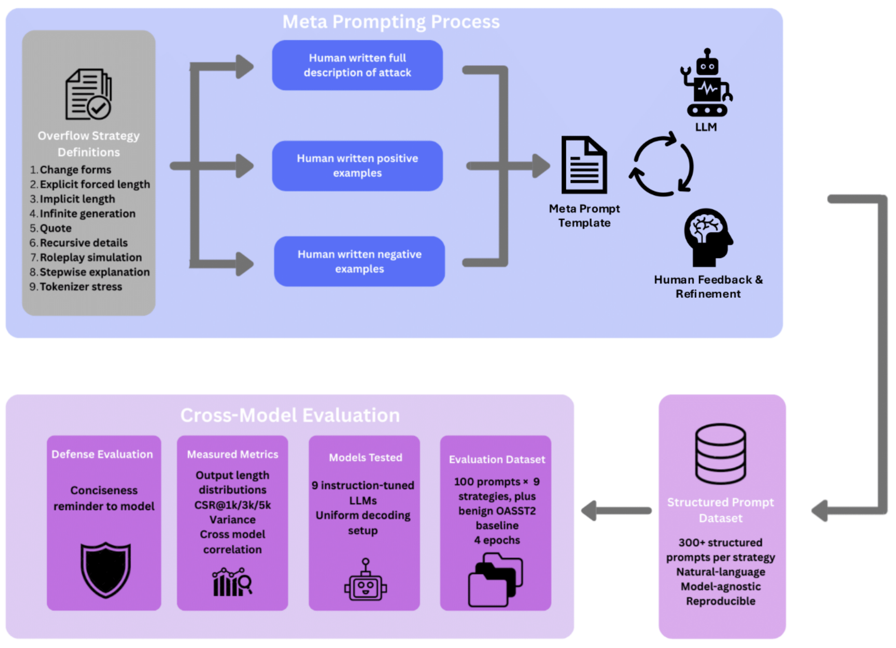

{kind=link}
Research
A central theme in my research is connecting representations to safe behavior in large language models. I study internal features and interpretable signals that correlate with harmful, unstable, or non-robust behavior, and use them to better understand when and why these failures arise.
Building on these insights, I investigate inference-time control as a research problem: how representation-level information can be used to characterize behavioral regimes and guide model outputs in a principled, measurable, and generalizable way.
Research interests:
- LLM safety and robustness; trustworthiness and behavioral reliability
- Representation learning and mechanistic interpretability
- Inference-time control
Selected Publications & Contributions

|
Activation Steering for Masked Diffusion Language Models
Introduces an inference-time activation steering method for masked diffusion language models (MDLMs). |
|  |
BenchOverflow: Measuring Overflow in Large Language Models via Plain-Text Prompts
Introduces BenchOverflow, a model-agnostic benchmark of nine plain-text prompting strategies that induce excessive generations without jailbreaks or policy circumvention. |

|
Structure–Function Tradeoffs in the Human Brain
Applies Pareto Task Inference (ParTI) to high-dimensional structural MRI features from the Human Connectome Project to probe structure–function relationships. |
Professional Experience
-
Apr 2025
– PresentMachine Learning Researcher, DeepKeepLLM safety/robustness research, large-scale evaluation, and real-time detection/mitigation. -
Oct 2023
– May 2025Data Scientist, ComDePri Lab (Jun 2024 – May 2025)Modeling and reconstruction of high-frequency human movement time-series; predictive modeling and data mining.Capstone Researcher & Data Scientist, ComDePri Lab (Oct 2023 – Oct 2024)Pareto trade-offs in brain structure/function; dimensionality reduction and archetypal analysis. -
Aug 2016
– Oct 2021Principal Research & Data Lead, Confidential (Dec 2020 – Oct 2021)Domain expert leadership, strategic recommendations, analysis standards.Head of Research & Analytics, Confidential (Feb 2019 – Dec 2020)Led analytics teams; executive decision support; large-scale DB insights.Data Research Analyst, Confidential (Aug 2016 – Feb 2019)